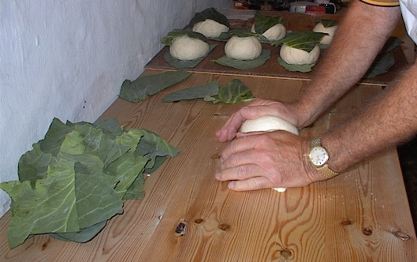
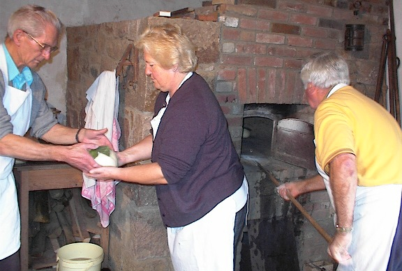

Comme tchi qu' nou faîthait l'pain et qu' nou fouôngnait aut'fais?
Comme tchi qu' nou faîthait l'pain et qu' nou fouôngnait aut'fais?
Preunmiéthement nou faîthait du lèveton atout du houbillon et du brais qué nou-s-avait d'la brach'chie. Ou bein nou-s-acatait l'lèveton tout prépathé à la boutique, à trais ou quat' sou la boutelle dé pînte et d'mie. Lé houbillon et l'brais 'taient mêlés ensembl'ye et pis nou laîssait ch'la à bouoilli un cèrtain temps. Quand v'nait l'jour pouor fouôngner (ch'tait d'amors par un sanm'di) nou m'ttait la flieu dans l'tro, tch'était souvent eune pièche dé meubl'ye dans la tchuîthinne, lé sé dé d'vant et nou faîthait lé l'vain. V'là tchi veurt dithe qué nou m'ttait l'lèveton dans un flias dans la flieu, lé mêlant atout eune quarte dg'ieau tchiède en l'saûpoudrant auve eune pouongnie d'flieu. Lé lend'main nou pêtrissait la pâte, faîthant sèrvi eune pouongnie d'sé et dans les siex pots dg'ieau (s'lon combein d'pâte tch'i' fallait). Nou pêtrissait à bein près eune démi'heuthe et nou la laîssait l'ver jusqu'à qu'ou fûsse au haut du tro, chein tchi prannait dans les trais à quatre heuthes. Auprès ch'la nou faîthait les pains et nou les portait dans la boulangu'thie (ou fouônnîn) pouor les mettre au fou.
 I' faut dithe qué hardi d'gens avaient lus tro et pêtrissaient dans la boulangu'thie; ch'est à dithe qué à bein des bords tout s'faîthait dans la boulangu'thie. Lé vièr mot pouor la boulangu'thie était l'fouônnîn ou, comme y'en a tchi dîthaient, l'fouânnîn. Lé fou 'tait caûffé d'avanche atout du geon, ou d'la bruëthe. Nou faîthait sèrvi eune fourtchette à fou, à deux dés, ou comme nou dîthait étout, fourtchette à geon ou l'enfouônneux, pouor pousser la caûffe dans l'fou. Mais souvent nou-s-a veu faithe sèrvi eune frouque d'êtabl'ye quand ch'tait du geon. Un bouôn caûffeux d'vait pouver faithe san travas atout deux bouonnes dgèrbes et ofûche deux'trais pitchets d'extra. Mais fallait y'être à l'habitude et pon un novice! V'là tchi prannait trais quarts d'heuthe. Ch'la fait, nou rabotait la braise atout l'rabot et nou la laîssait tchaie dans la fouônnaise. Nou patouoillait bein l'fou atout eune patouoille dé vrai (ou bein en pouque), et pis nou freunmait la dgeule deux'trais minnutes à r'penti. Dé nouot' temps ch'tait eune porte en fé tchi freunmait l'grand fou, mais aut'fais ch'tait eune êtoupe (ou un êtoupon) en bouais. Nou rouvrait et nou-s-enfouônnait, mais fallait tréjous prendre garde qué l'fou n'fûsse pon trop âpre (trop caûffé) dé peux qué l'pain n'brûlîsse. L'êpreuve sé faîthait en m'ttant eune saûpoudrée d'flieu dans l'fou. Si la flieu brûlait ou happait feu, lé fou 'tait trop âpre, mais si ch'est qu'ou breunissait douochement il 'tait bein. Eune autre êpreuve 'tait qué si l'fou tapait (faîthant "tique-tique") il 'tait des deux iun trop caud. I' fallait tch'i' fûsse justément bein. Nou-s-enfouônnait atout la pelle à fou (ou l'enfouônneux, comme v'là tchi s'app'lait étout) tch'était faite en bouais, ayant posé eune bouonne grand' fielle dé chour souos châque pain. Nou r'freunmait l'fou. Pis, l'temps pâssé, nou douothait d'l'èrdgile tout à l'entou d'l'êtoupon pouor garder la chaleu. Cèrtains faîthaient sèrvi d'la boûthe dé vaque auve l'èrdgile. Au but d'eune heuthe et d'mie ou d'même nou halait l'pain quand il 'tait tchuit, et nou lé m'ttait sus la plianche à tro à r'fraidgi eune volée dans la boulangu'thie. Les pains touos tchuits b'saient dans les six à huit livres, et tchiquefais pus. Chein qu' nou-s-app'lait eune tourte b'sait eune douzaine dé livres.

Mais l'grand fou sèrvait à bein aut' chose qué pour lé pain. Par exempl'ye, en fouôngnant nou faîthait l'pus souvent tchiques gâches a fouée, qué nou mangeait au thée toutes caudes auve du beurre. Pouor les tchuithe nou les m'ttait chînq minnutes à la dgeule tandi qué l'fou 'tait à r'penti. Mais nou pouvait les tchuithe à la r'traite étout. Des bourdélots étout, du pâté et d'la gâche dé pâte lévée... Ches'-chîn restaient au fou aussi longtemps comme lé pain, mais la gâche dé pâte en partitchulyi 'tait pûtôt pus mauvaise à tchuithe. Nou-s-avait tchiquefais étout un piot ou un haut d'pid auve des pais et des fèves au fou (ah, ch'tait là un fanmeux fricot!), des patates au fou, assiettée d'pommes douoches au fou, et cétéra. Quant ès pommes, ch'tait à la r'traite qué nou les tchuîthait. Si nou s'n allait faithe, d'la finne gélée d'pommes, ofûche, acouothe eune fais - ch'tait l'grand fou. Nou tchuîthait les pommes dans des pots (comme des pots à lait), pis l'lend'main nou les coulait pouor faithe la gelée. A Noué lé festîn n'éthait pon 'té bouon si nou n'avait caûffé l'grand fou ; patates, lard, rouelle dé boeu, pithot, picot, cotchets et podîn tout y pâssait ! Sans doute il 'tait bein connu qué tout 'tait tréjous miyeu dans l'grand fou. Tchiquefais quand la dgeule 'tait usée et qué l'fou pèrdait sa caûffe, nou-s-y cliutait eune boûthe dé vaque ; ou bein, les cheins tchi lus comptaient un p'tit pus raffinnés y'éthaient douothé un chapé d'mortchi. Nou s'rappelle d'aver veu un machon à r'faithe lé fou atout des briques et d'la rouoge tèrre (ou mortchi) et à l'èrvotter y'a bein d's années. Eune votte (ou un ciel, comme cèrtains dithaient) et un fond d'vaient duther la vie d'eune fanmil'ye. Y'a acouothe eune chose tch'i' faut dithe, et ch'est qué toutes les siex s'maines ou d'même nou lavait l'tro. Ch'la 'tait considéthé tout à fait eune acte d'proprété. Nou-s-a ouï dithe qué jusqu'à y'a tchiques années les boulandgièrs né lavaient lus tros quâsi janmais ! Ch'tait ch'tchi faîthait sans doute qué nou-s-avait tchiquefais du pain d'acat tch'était su!
Né v'là, don, eune description d'la fouônn'nie d'pain du temps pâssé. Et, ch'est tch'i' fallait saver san mêtchi ! Ch'n'est danme pon les drinnettes d'à ch't heu tchi pouôrraient boulandgi comme lus grand-méthes faîthaient! Hélas!.... où'est tch'est l'temps pâssé ? Y'avait acouo tchiques fèrmiéthes tchi fouôngnîdrent jusqu'à la dreine dgèrre, mais ch'tait par lé saint p'tit. Mais, dans l'temps d'l'Otchupâtion, ma fé, les grands fours èrfûdrent caûffés dé temps en temps, deux'trais fanmil'yes ensembl'ye dans un vaîsinné en faîthant eune bordée, et pis étout à Noué siez l's uns ou siez l's autres.
Eh bein, né v'là. Nou peut bein seux dithe qué la faîth'thie d'pain au grand fou est finnie à ch't heu pouor tréjous. Nou n'èrgouôt'ta don janmais du bouôn pain d'fèrme comme aut'fais.
Viyiz étout: